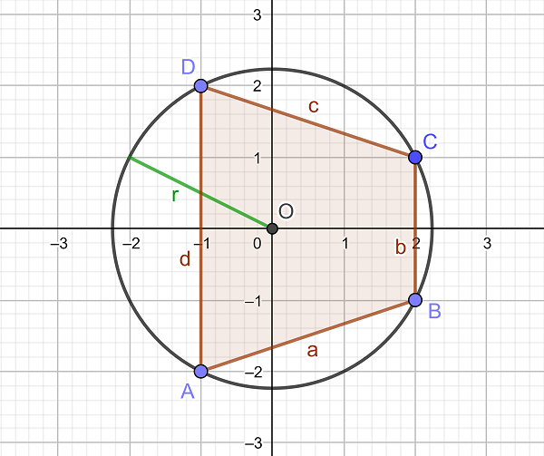

Problem 723: "Pythagorean Quadrilaterals" (level 31)
A pythagorean triangle with catheti $a$ and $b$ and hypotenuse $c$ is characterized by the well-known equation $a^2+b^2=c^2$. However, this can also be formulated differently:
When inscribed into a circle with radius $r$, a triangle with sides $a$, $b$ and $c$ is pythagorean, if and only if $a^2+b^2+c^2=8\, r^2$.
Analogously, we call a quadrilateral $ABCD$ with sides $a$, $b$, $c$ and $d$, inscribed in a circle with radius $r$, a pythagorean quadrilateral, if $a^2+b^2+c^2+d^2=8\, r^2$.
We further call a pythagorean quadrilateral a pythagorean lattice grid quadrilateral, if all four vertices are lattice grid points with the same distance $r$ from the origin $O$ (which then happens to be the centre of the circumcircle).
Let $f(r)$ be the number of different pythagorean lattice grid quadrilaterals for which the radius of the circumcircle is $r$. For example $f(1)=1$, $f(\sqrt 2)=1$, $f(\sqrt 5)=38$ and $f(5)=167$.
Two of the pythagorean lattice grid quadrilaterals with $r=\sqrt 5$ are illustrated below:


Let $\displaystyle S(n)=\sum_{d \mid n} f(\sqrt d)$. For example, $S(325)=S(5^2 \cdot 13)=f(1)+f(\sqrt 5)+f(5)+f(\sqrt {13})+f(\sqrt{65})+f(5\sqrt{13})=2370$ and $S(1105)=S(5\cdot 13 \cdot 17)=5535$.
Find $S(1411033124176203125)=S(5^6 \cdot 13^3 \cdot 17^2 \cdot 29 \cdot 37 \cdot 41 \cdot 53 \cdot 61)$.